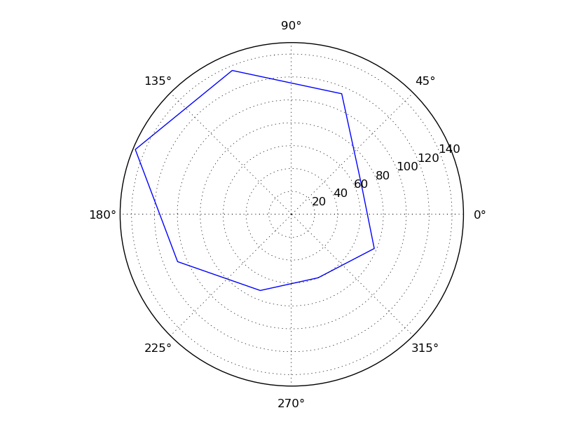

For the paper: Sturzl W, Kempter R, van Hemmen JL (2000) Theory of arachnid prey localization. Phys Rev Lett 84:5668-71 Abstract: Sand scorpions and many other arachnids locate their prey through highly sensitive slit sensilla at the tips (tarsi) of their eight legs. This sensor array responds to vibrations with stimulus-locked action potentials encoding the target direction. We present a neuronal model to account for stimulus angle determination using a population of second-order neurons, each receiving excitatory input from one tarsus and inhibition from a triad opposite to it. The input opens a time window whose width determines a neuron's firing probability. Stochastic optimization is realized through tuning the balance between excitation and inhibition. The agreement with experiments on the sand scorpion is excellent. Brian simulator models are available at this web page: http://briansimulator.org/docs/examples-frompapers_Sturzl_et_al_2000.html Note that the poisson input in the paper was replaced by integrate and fire neurons. The simulation generates an image of eight neurons spike activity from a prey at 144 degrees (see phi assignment on line 8 in Brian program at above link):  This simulation requires Brian which can be downloaded and installed from the instructions available at http://www.briansimulator.org/ For support on installing and using Brian simulations there is a support group at https://groups.google.com/group/briansupport.